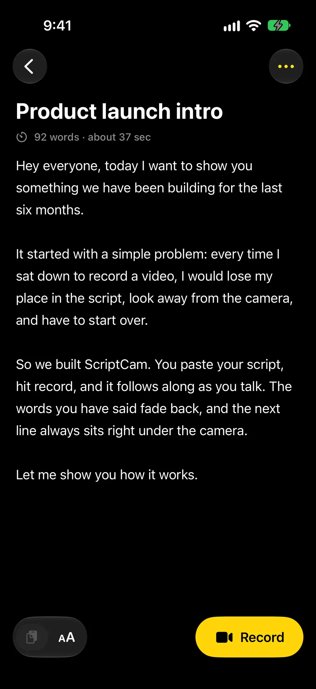

Step 1 of 3 · Write
Paste the script.
Each step is a tall block of copy. As its top reaches 60% of the screen, the story's progress passes a whole number and the phone flies to that step's pose.

Teleprompter and camera for iPhone
Paste your script, hit record and just talk. The next line waits right under the camera.
Download on the App StoreStep 1 of 3 · Write
Each step is a tall block of copy. As its top reaches 60% of the screen, the story's progress passes a whole number and the phone flies to that step's pose.
Step 2 of 3 · Record
The screen swaps at the step's arrival and dims for a beat, like an app changing view. Between steps the pose holds still while you read.
Step 3 of 3 · Review
After the last step the phone turns away and the stage lets go, because the sticky stage only pins for its own section.